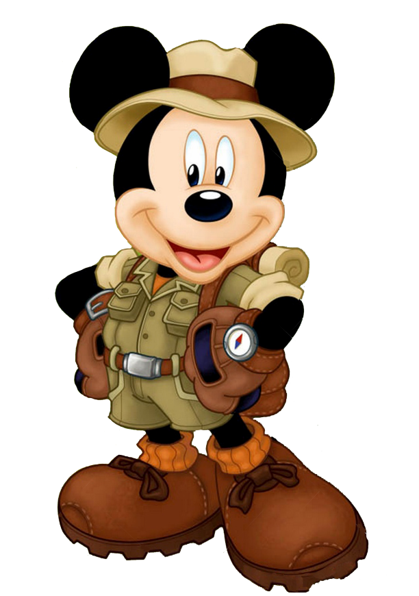

01
Вот начало
А началось все с моих приключений
Когда мне было лет 5 то я мечтал быть мультипликатором и делать (создавать) свои собственные мультики. Но для этого мене нехватало уверенности в себе, а также нехватало ума. Но лет в 8-9 я уже начал както понимать, что все что происходит вокруг меня и есть один большой и длинный мультик.
02
Повезло так повезло
Первый мой компьютер
Когда мне стукнуло 11 лет мы поехали с отцом к бабушке в гости. В то время она жила в Москве, а мы в Норильске. И когда мы прилетели к ней в гости, то мы поехали на радио-рынок. Где и купили мне компьютер. Хотя отец сначало не признавался зачем мы едем на этот рынок, а я у него спрашивал зачем мы туда едем. Но он все говорил вот как приедем так и узнаеш.

03
И тут поперло
Первые азы
Когда мы вернулись от бабушки из гостей то я сразу же начал осваивать свой первый комп. В 13 лет я уже пошел на курсы по программированию на языке Basic. А в 14 лет я уже написал свою первую программку. В которой мы могли склаывать и вычитать простые числа. И выводить на экран ответ, а также могли распечатать правильный ответ с его решением на принтере. Это было незабываемое чувство восторга.